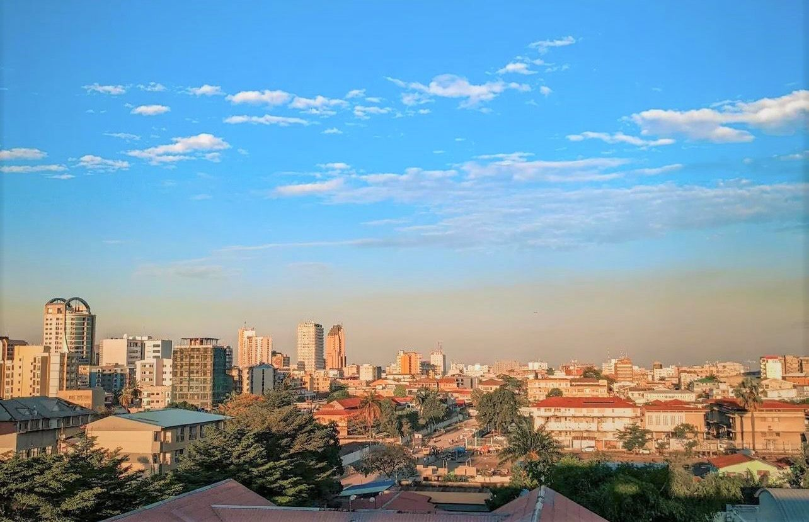

민주콩고 에볼라 확산…사망 200명 넘어, 통제까지 1년 우려
콩고민주공화국에서 에볼라 바이러스병이 확산해 사망자가 200명을 넘었다. 보건 당국은 완전 통제까지 1년이 걸릴 수 있다고 내다봤다.
유선경 기자 · 2026.06.19
橋국제

자유시보는 콩고민주공화국의 에볼라(이라보) 유행으로 200명 넘는 사망자가 발생했으며, 통제에 약 1년이 필요할 수 있다고 전했다. 외딴 지역의 의료 접근성 부족이 대응을 어렵게 한다.
광고 문의 · 300×250확산의 배경
에볼라는 치명률이 높지만 조기 격리와 접촉자 추적으로 통제가 가능한 질병이다. 그러나 보건 인프라가 취약하고 교통이 불편한 지역에서는 환자 발견과 치료가 늦어져 확산이 길어진다.
국제 보건기구와 인접국은 백신과 진단 키트, 의료 인력을 보내 대응을 돕고 있다. 신속한 정보 공유와 지역사회 신뢰 구축이 유행 종식의 관건으로 꼽힌다.
華橋時報는 감염병을 공포가 아닌 사실과 대비의 관점에서 전한다. 여행·교류가 잦은 화인 사회에도 정확한 정보가 최선의 예방이라는 점을 함께 짚는다.
출처·참고 (사실 확인용 — 본문은 직접 재작성)
· 자유시보(自由時報) 2026.06.19 '民主剛果伊波拉疫情釀逾200死 恐需一年才能控制下來'
· 자유시보(自由時報) 2026.06.19 '民主剛果伊波拉疫情釀逾200死 恐需一年才能控制下來'